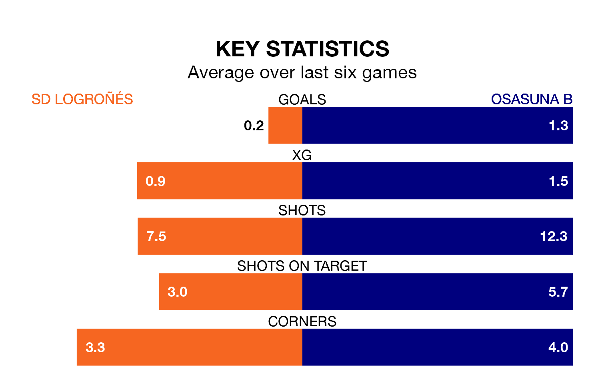

SD Logroñés are on a terrible run ahead of hosting Osasuna B at the Estadio Nuevo Municipal Las Gaunas on Sunday, with just two points collected from their last six games.
Logroñés have picked up two draws and four losses in their last six Primera Division RFEF Group 1 games, and face an Osasuna B side whose last six games have brought two wins and one draw.
Logroñés are bottom of the table after 32 games, of which they have won seven and drawn six, earning 27 points.
Osasuna B are seven places ahead of the hosts in 13th, with nine wins and 10 draws putting them on 37 points.
With 21 goals in 32 games so far this season, Logroñés are the league's lowest scorers with 0.7 goals per game. And they are conceding more than average, letting in 47 goals at a rate of 1.5 per game.
The away team, meanwhile, are above average scorers, with 1.2 goals per game, compared to a league average of 1.1. They have conceded 1.4 goals per game.
In Ander Yoldi Aizagar, Osasuna B have one of the league's most on-form strikers so far this season. He has notched eight goals in 24 appearances, to sit second in the scoring charts.
His goal rate of one every 237 minutes is quicker than that of Jordi Escobar Fernández, Logroñés's top scorer with a goal every 380 minutes, and a total of five goals in 22 games.
In the last five years, Logroñés and Osasuna B have played each other on five occasions. Logroñés won two of them, Osasuna B one, and they drew twice.
On average, Logroñés scored 1.0 goal and Osasuna B 1.0 in those matches.
Their last meeting was on January 4, when Osasuna B won 3-0 at home.
Logroñés's last match was on April 14, a 3-0 loss against SD Ponferradina.
Osasuna B beat CE Sabadell 2-0 last time out, also on April 14, with Yoldi Aizagar on the scoresheet.
Updated: 11:31 (UTC), 15/04/24